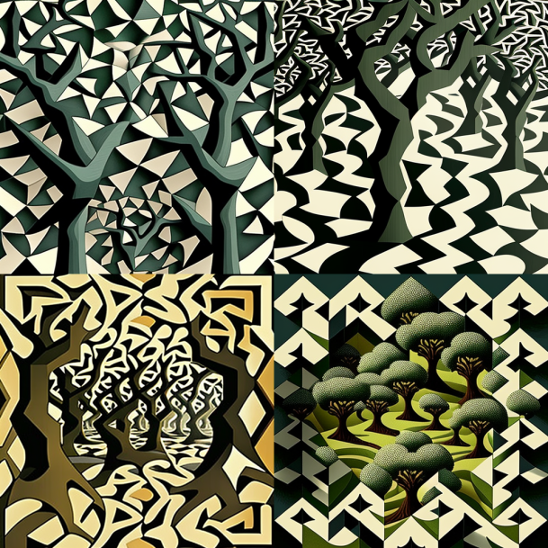
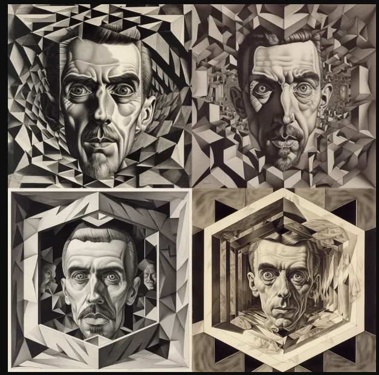
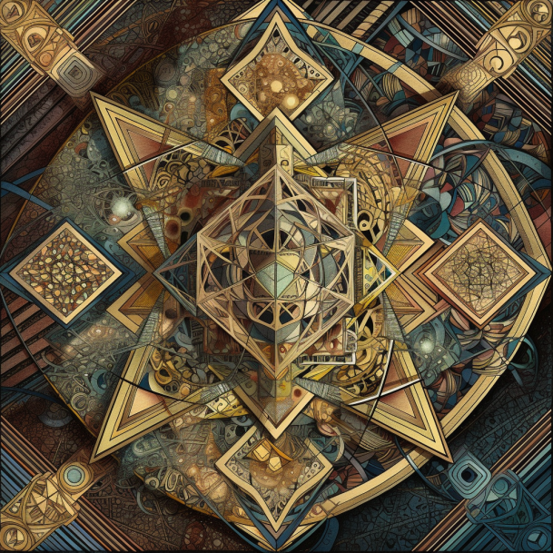

进入拓扑艺术馆
一起探索拓扑宇宙

视错觉艺术
视错觉，是指通过几何排列、视觉成像规律等手段，制作有“视觉欺骗”成分的图像进行眼球欺骗，引起的视觉上的错觉，达到艺术或者类似魔术般的效果。
埃舍尔的拓扑世界
莫里茨·科内利斯·埃舍尔,荷兰著名版画艺术家,他的版画作品常使用到几何的概念，对于“错视”艺术极为拿手。埃舍尔的版画技术卓越，足以充分善用不同技巧的优点。他以明显的黑、白色对比与精准的线条刻划，树立了与众不同的版画风格；他也创造演绎出复杂奇幻的变形结构，颠覆了自然的规律。


拓扑学
拓扑学意为位相几何学，是一门研究拓扑空间的学科，主要研究空间内，在连续变化下维持不变的性质。 它只考虑物体间的位置关系而不考虑它们的形状和大小。